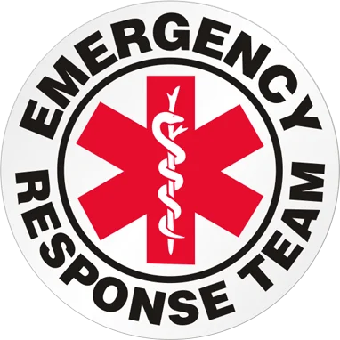

About Me
How I got into software
For about 20 years I've been the person who builds the spreadsheet. At Kwik Star I wrote the bookkeeping guide the company adopted. At a Target distribution center I joined the new inventory control team and wrote the SQL behind a lookup tool we now use hundreds of times a day.
That work was the part of every job I liked most, so I went back to school for it. I finished a B.S. in Software Development at Bellevue University in October 2026, Summa Cum Laude with a 4.0. Now I want to do it full time: find the problem people keep working around, build the tool, and make sure it holds up.
How I work
I start with the design: a short spec, the domain terms, and the decisions that matter, written down before the code (you'll find glossaries, ADRs and build plans in my repos). Then I break the work into GitHub issues and build it one issue at a time.
I use AI coding assistants, mainly Claude Code, for a lot of the typing. I decide what gets built and how it's structured, and I check generated code the way I'd check anyone's: I read the diff, run the app, and lean on tests where a mistake would hurt, like the Row Level Security isolation tests in FitIQ and the Playwright suites in PalletIQ. If I can't explain a piece of code, it doesn't ship.

Outside of code
I coach my son's youth flag football and baseball teams, help at local basketball events, and build spreadsheets and tracking tools for our Parks and Recreation department. At work I've been on the Emergency Response Team for over seven years: Red Cross certified in first aid, CPR and AED, trained weekly by our on-site nurse, and bound by workplace confidentiality for anything a patient tells us. Both teach the same thing: stay calm, explain clearly, and help the person in front of you.